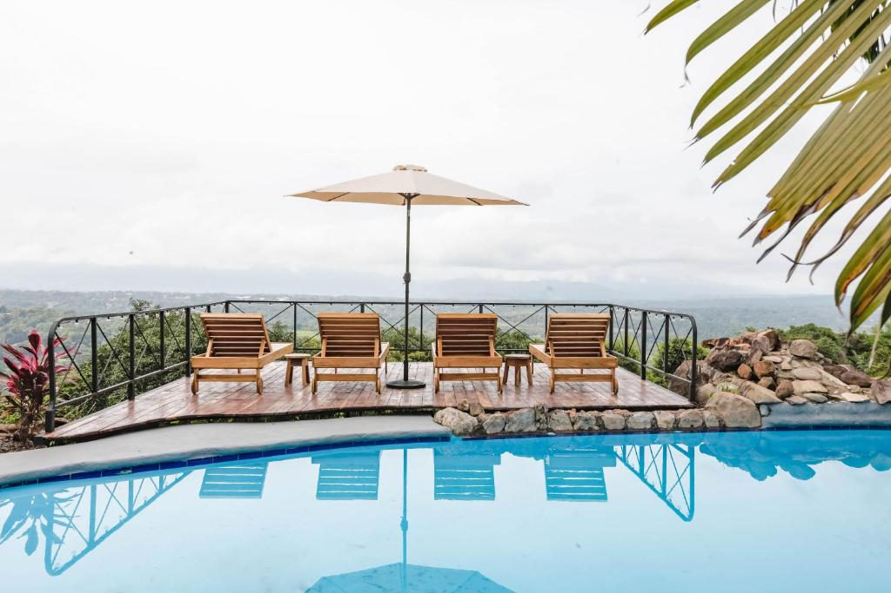
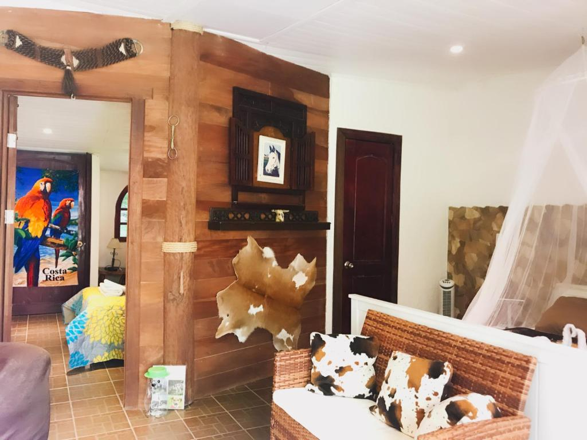

Puntarenas
The coasts of the Puntarenas tourist zone are adorned by islands, beaches and natural treasures. It is an excellent tourist destination. Its territory offers a variety of beach and sun attractions. Its main center, the City of Puntarenas, functions as a place of stay, distribution and excursion. Mostly traditional hotels and cabins near the sea prevail.
-
 Adventure Park & Hotel Vista Golfo
Adventure Park & Hotel Vista Golfo
Located in the hills near Miramar, this hotel offers amazing views over the forest as far as the Gulf of Nicoya. It offers an outdoor pool and a range of adventure activities.
Click to see more -

buen camino
Set in San Mateo, 41 km from Parque Marino del Pacifico, Buen Camino offers accommodation with an outdoor swimming pool, free private parking, a garden and a terrace. Each accommodation at the 4-star hotel has sea views, and guests can enjoy access to a restaurant and to a bar. Parque Viva is 42 km from the hotel and Alejandro Morera Soto Stadium is 48 km away.
Click to see more -
Hotel Cayuga
Set in Puntarenas, 700 m from Puntarenas Beach, Hotel Cayuga offers accommodation with an outdoor swimming pool, free private parking, a fitness centre and a shared lounge. With a terrace, the 4-star hotel has air-conditioned rooms with free WiFi, each with a private bathroom. The accommodation features room service and a 24-hour front desk for guests.
Click to see more -
 Isla Chiquita Glamping Hotel
Isla Chiquita Glamping Hotel
Isla Chiquita Glamping Hotel has a restaurant, outdoor plunge pool, a bar and garden in Puntarenas. Boasting family rooms, this property also provides guests with a sun terrace. The accommodation features a tour desk, and currency exchange for guests.
Click to see more -
Pacifico Hotel Boutique
Providing free WiFi, a sun terrace with a swimming pool, garden and bar, OPacifico Hotel Boutique is located in Playa Naranjo, 600 m from Naranjo Ferry Terminal. Featuring a tour desk, this property also has a restaurant.
Click to see more -
 Puerto Azul Resort & Club Nautico
Puerto Azul Resort & Club Nautico
Located right on the Pacific Ocean in Puntarenas, this hotel offers an outdoor swimming pool, plus a sailing club and sports facilities. Puerto Azul Resort y Club Nautico also boasts free breakfast .
Click to see more -

Hacienda Sassenberg
Situated in Miramar, 34 km from Parque Marino del Pacifico, Hacienda Sassenberg has an outdoor swimming pool, a garden and a terrace, as well as free WiFi. The accommodation provides a tour desk, and currency exchange for guests.
Click to see more -
 Villas Palmas del Mar
Villas Palmas del Mar
Set within 8 km of Parque Marino del Pacifico and 9 km of Lito Perez Stadium in Puntarenas, Villas Palmas del Mar features accommodation with free WiFi.
Click to see more